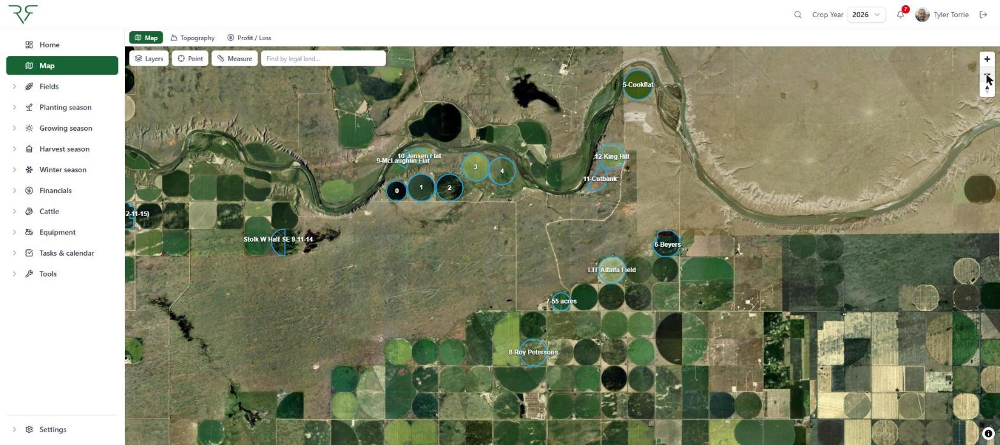
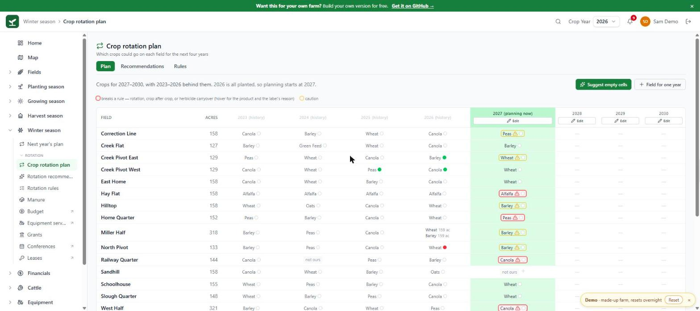
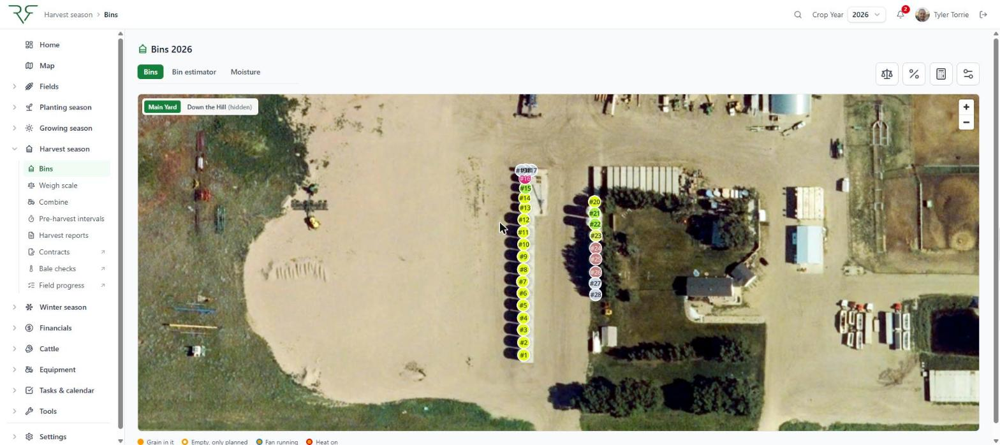
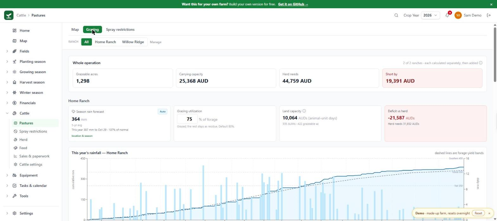
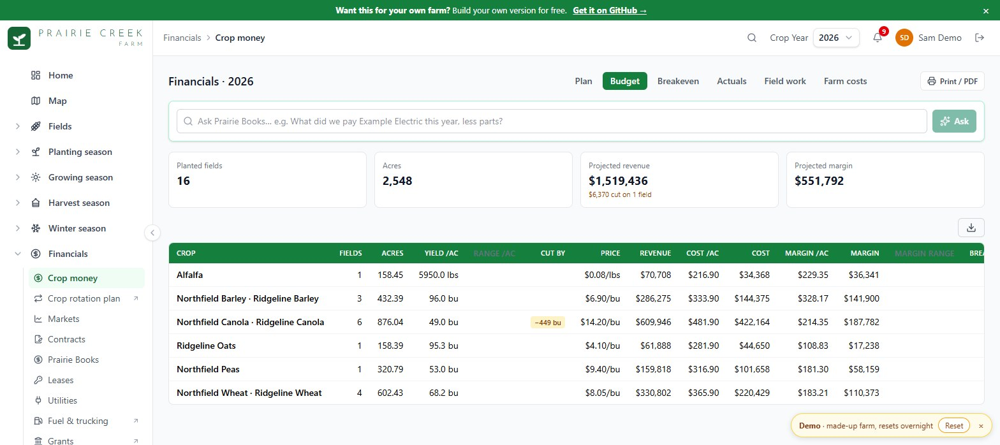
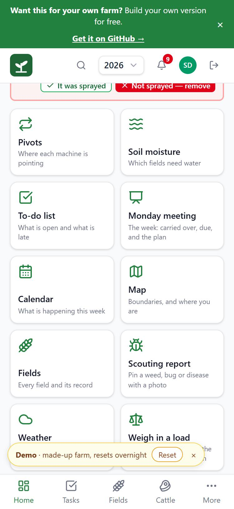

Fields and crop plans, cattle, grain bins, irrigation, equipment, spray records and the books — kept in one place by a mixed grain and cattle farm in southern Alberta, and shared as source. Free for farms to use.
No sign-up. The demo's farm is made up and runs entirely in your browser.

Five screens from the app. The map and the bin yard are the farm's own; the other three are the demo's made-up farm. None of them show anyone's money.




One app, because a farm is one business.
Crop plans and rotation rules, seeding and harvest progress, yields by field, soil tests and fertility.
Bins and what is in them, weigh-in by truckload, scale tickets, contracts, deliveries and drying.
Herds and pastures, grazing days, water, winter feed budgets by energy, and the paperwork.
Pivots, water licences and allotments, soil moisture, and what the season's water will stretch to.
Service due, work orders, warranties, fuel and trucking costs, and the field operations machines report.
What went on each field, the product labels behind it, re-cropping and grazing restrictions, invoices.
Field costs, budgets, break-even, cash flow and lender reports, read in from QuickBooks.
The forms a farm actually has to file, filled from its own records and downloaded as PDF or a spreadsheet.

Most of this gets used standing in a field or beside a bin, often with one bar of signal and a glove on.
The demo runs a made-up farm entirely in your browser: nothing to install, nothing to sign up for, and nothing you type leaves your machine. To run it for your own farm, follow SETUP.md — it needs a free Supabase project and a free Netlify account, and the whole thing fits in their free tiers for one farm.
A prototype, shared as-is. There is no warranty and no support. Formulas, figures and advice in it may be wrong — check anything that matters against your own records and your own agronomist, accountant or vet. The licence is PolyForm Noncommercial with an added permission for farms: free for a farm to run its own operation on, not for resale. It is rebuilt and republished here every week, so what is here is what the farm is using.